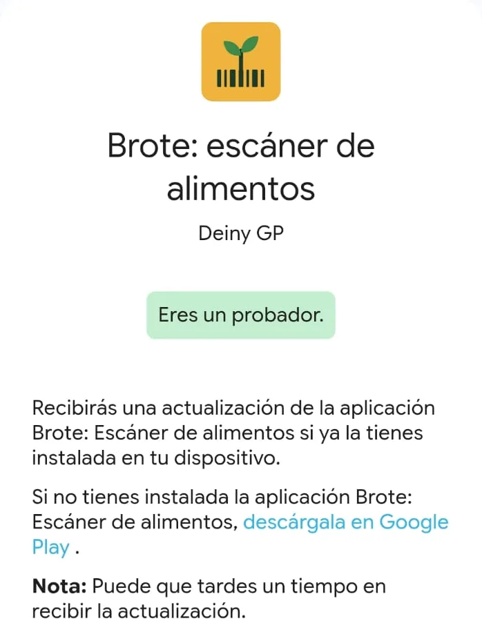

Ayúdanos a probar Brote
Antes de publicar una app nueva para todos, Google pide que al menos 12 personas la prueben durante 14 días. Te toma unos 3 minutos y es gratis.
¿Primera vez que oyes de Brote? Mira qué hace y cómo funciona.
-
Únete al grupo de testers
Abre el enlace y toca «Unirse al grupo». Sabes que quedaste dentro cuando ya no aparece ese botón. No es una lista de spam: solo avisamos cuando sale una versión nueva.
¿Dice «No tienes permiso para acceder a este contenido»? No es que no puedas: es que el navegador no tiene abierta tu cuenta. Toca «Acceder» arriba, entra con el correo de Play Store y aparecerá el botón «Unirse al grupo».
Unirme al grupo -
Acepta ser tester
Es el paso que más se olvida: sin él, la app aparece como no disponible. Abre el enlace y toca «Convertirse en verificador» (así le dice Google a quien prueba la app). Sabes que funcionó cuando ves «Eres un probador», como en la imagen.
Ser tester de Brote
Así se ve cuando ya eres tester. El enlace azul te lleva a instalarla. Si dice que no tienes acceso, Google todavía no te ve en el grupo: revisa que sea la misma cuenta, espera unos 15 minutos y vuelve a abrir el enlace.
-
Instala Brote
En esa misma página, toca el enlace azul «descárgala en Google Play» y luego «Instalar». Mientras esté en prueba, Brote no aparece si la buscas por nombre en Play Store: entra siempre por el enlace. Aparece como acceso anticipado, es normal en las pruebas.
Abrir Brote en Play StoreSi dice que no está disponible: en Play Store toca tu foto arriba a la derecha y revisa que sea el mismo correo de los pasos 1 y 2. Si lo es, espera un rato (a veces Google tarda hasta una hora) y vuelve a abrir el enlace.
-
Quédate 14 días
No desinstales la app ni salgas de la prueba durante 14 días: solo cuentan las personas que siguen inscritas. Úsala cuando vayas a comprar y, si algo falla o se te ocurre una mejora, cuéntanos desde la app en Perfil → Acerca de Brote.
Si algo no funciona
En Play Store dice que la app no está disponible
Casi siempre es la cuenta: Play Store (tu foto arriba a la derecha) debe tener el mismo correo con el que entraste al grupo y aceptaste ser verificador. Si tienes varias cuentas en el teléfono, cambia Play Store a esa, o repite los pasos 1 y 2 con el correo que usa Play Store. Si todo coincide, espera hasta una hora y cierra y abre Play Store. Si después de eso sigue sin aparecer, escríbenos a deiny.gp+dev@gmail.com y lo vemos juntos.
Hice los pasos con otra cuenta
No pasa nada: repite los pasos 1 y 2 con el correo que usa Play Store. Puedes salir del grupo con la otra cuenta si quieres.
Uso una cuenta del trabajo o del colegio
Esas cuentas suelen tener bloqueados los grupos externos. Usa una cuenta personal de Gmail en los tres pasos.
Dice que no es compatible con mi teléfono
Brote necesita Android 8 o más nuevo. Lo puedes ver en Ajustes → Información del teléfono → Versión de Android.
Abrí los enlaces desde el computador
Sirve igual para los pasos 1 y 2, siempre que el navegador tenga abierta la misma cuenta que tu teléfono. Después instala desde Play Store en el teléfono.
¿Tengo que pagar algo?
No. Brote es gratis y no necesitas comprar nada para ayudar con la prueba.
Tengo iPhone
Por ahora Brote es solo para Android. ¡Gracias igual! Puedes compartir esta página con alguien que tenga Android.
No vivo en Chile
Puedes probarla igual. La base de productos es de Chile, así que encontrarás menos alimentos al escanear, pero también puedes fotografiar la lista de ingredientes.
¿Qué datos ve el equipo de Brote?
Al unirte, Google nos comparte tu correo para gestionar la prueba. Lo que guardas en la app (familia, alergias, historial) no sale de tu teléfono. Política de privacidad.
Comparte esta página
Cada persona que se suma nos acerca a publicar Brote para todos.